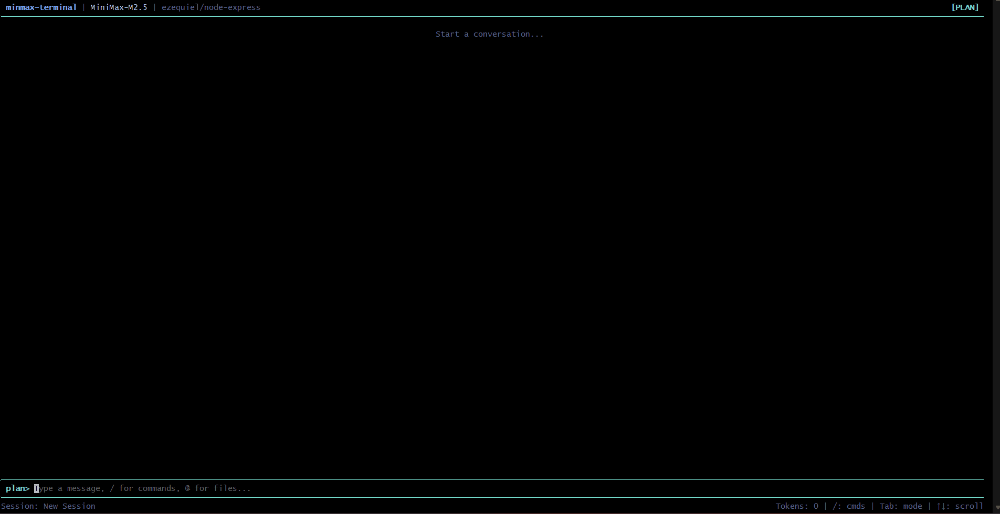
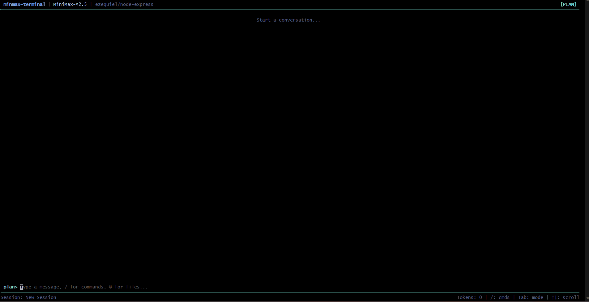

PLAN mode — read-only analysis
BUILDER mode — agentic execution

AI coding assistant in your terminal
PLAN mode — read-only analysis
BUILDER mode — agentic execution
No dependencies. Standalone binary with everything bundled.
Read, write, edit files. Run commands. Search with ripgrep.
Fast reasoning with MiniMax-M2.5. Streaming responses.